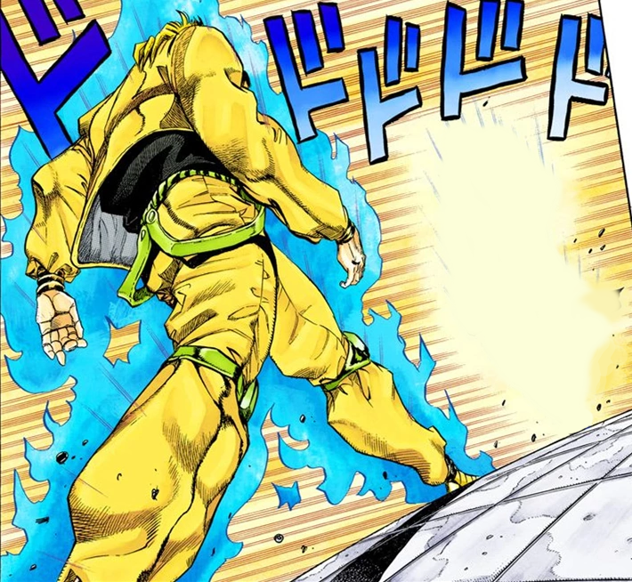

Dio Brando
Master of Walking

Master Dio showing us how it's done.
- "It was with me, Dio!" —Dio after stealing Erina's Sacred First Kiss
- I REJECT MY HUMANITY, JOJO!" —Dio before becoming a Vampire
- "WEAK, WEAK!"/"HINJAKU, HINJAKU!!" —Anytime someone proving too weak attacks him, before brutalizing them
- The Hamon training is useless! Useless! Useless! Useless! Useless! Useless! USELESS!! Can a monkey stand against a human!? Compared to me, Dio, you are but a monkey, JoJo!!"—The very first utterance of "Muda muda muda muda muda!!/Useless useless useless useless useless!!" (Also the English translation of one of his quirky phrases "MONKEY NAN DA YO"
- Seven seconds have passed...HERE'S A ROAD ROLLER!!!"
- MUDAMUDAMUDAMUDAMUDAMUDAMUDAMUDAMUDAMUDAMUDAMUDAMUDAMUDAMUDAMUDAMUDAMUDAMUDA
MUDAMMUDAMUDAMUDAMUDAMUDAMUDAMUDAMUDAMUDAMUDAMUDAMUDAMUDAMUDAMUDAMUDAMUDAMUDAMUDAMUDA-Dio explaining it in simple terms.